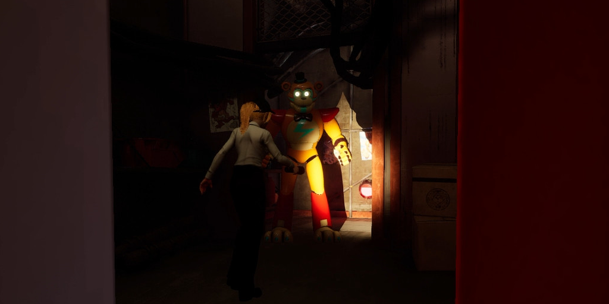

This mod for Five Nights at Freddy's Security Breach fixes the music that plays when you're around animatronics or you're active being chased.
Similarly, there is another generic ambience that had been accidentally deleted around the same time. This mod brings that back as well.
I used my remade Wwise Audio Project for the game to pull this off.